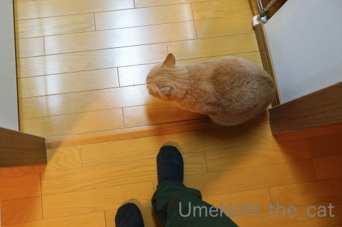
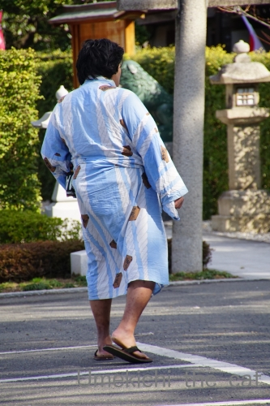
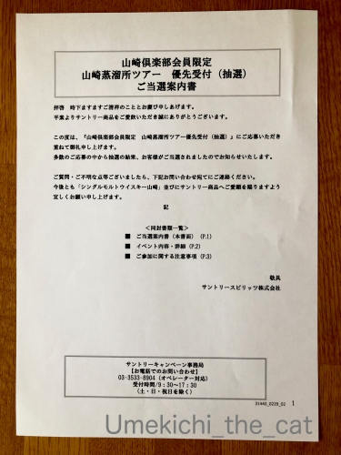
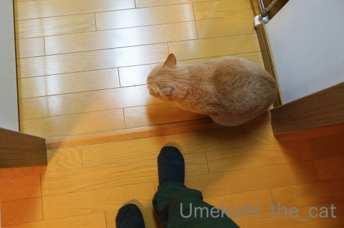
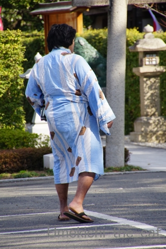
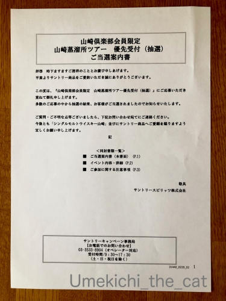

だから用意が遅くなる [梅吉]
キッチンの入り口でおかーさん待ち構える梅吉さん。

![[猫]](https://blog.ss-blog.jp/_images_e/101.gif) ごはんのじかんやで
ごはんのじかんやで

おかーさんの足に全力アピール！！

さっ こっちでちゃっちゃと よういしてや
と誘導されます。
ごはんの用意が出来るまでの約4分を４倍速にしてみました。
（32秒 音は出ません＾＾ ちょっとめまぐるしいかもw）
ご飯の用意、ご飯後に飲む白湯やお薬も用意しなければならないので
（梅吉はお薬が必要な子です）
皆さんのお家の子のご飯の用意よりも時間がかかっているかも。
それに！梅吉が動画に写ってない時は
キッチンカウンターの上で私の目の前を行ったり来たり・・・・・
私の顔の方にお尻を向けたまま立ち止るので手元が見えなくて全然用意が捗りませんw
時間の半分くらいは梅吉のおちりを「見せられてる」かも(｡-_-｡)
「よ〜け〜て〜よぉ」
「おちりしか見えませんよー♡」
と言っている時間は楽しくもありますが
大人しく座って待っててくれたらちゃっちゃと用意できるのに、とも思うのでありますw
＊＊＊＊＊＊＊＊＊＊＊＊＊＊＊＊＊＊＊＊＊＊＊＊＊＊＊＊＊＊＊＊＊＊＊＊＊＊＊＊＊＊＊

今年もこの季節がやってきました。
我が家の近くの大きな神社は大相撲大阪場所中立浪部屋の宿舎になっているのです。

朝稽古が終わった後の土俵。

いつも浴衣のお相撲さん＾＾
びん付け油の香りと沈丁花の香りが漂ってくると「ああ、春だ」と思います。
で、毎年行っている大阪場所なんですが今年は希望日のチケットが取れませんでした。
（チケットが売り出されたのは新型肺炎が大きな騒ぎになる前。）
残念ですけど今年に限っては取れなくてよかったかなぁとちょっとホッとしています。
たくさんの人が集まる密閉空間・・・感染の不安がよぎって心から楽しめないかも。
昨日のニュースでは無観客興行、場所中止の可能性もなんてニュースになっていました。
どうなるんでしょう。

もう一つホッとしたこと。
今月末サントリー山崎蒸溜所の有料ツアーに当選していたのですが
（人気でなかなか当選できないのです）
しばらくの間工場見学自体を中止しますと連絡がありました。
山崎蒸溜所があるのは京都。
工場の中は大丈夫だろうけれど彼の地に向かうまでの交通機関に色々懸念が・・・
行こうか？行くまいか？？
行って大丈夫なのか？？？参加する人ってどんな人たちー！？！？など
モヤモヤと考える日々が続いていたので
きっぱりと中止を言い渡されてありがたいなと思ったくらいです。
この先も色々なイベントが中止されそうですね。
昨日大阪で直前になって中止が発表されたコンサートがありましたけど
中止の決定は出来るだけ早めにしてほしいものです。
その点サントリーは、エライ！
 ↑ガブッと一押し↑
↑ガブッと一押し↑

おかーさんの足に全力アピール！！
と誘導されます。
ごはんの用意が出来るまでの約4分を４倍速にしてみました。
（32秒 音は出ません＾＾ ちょっとめまぐるしいかもw）
ご飯の用意、ご飯後に飲む白湯やお薬も用意しなければならないので
（梅吉はお薬が必要な子です）
皆さんのお家の子のご飯の用意よりも時間がかかっているかも。
それに！梅吉が動画に写ってない時は
キッチンカウンターの上で私の目の前を行ったり来たり・・・・・
私の顔の方にお尻を向けたまま立ち止るので手元が見えなくて全然用意が捗りませんw
時間の半分くらいは梅吉のおちりを「見せられてる」かも(｡-_-｡)
「よ〜け〜て〜よぉ」
「おちりしか見えませんよー♡」
と言っている時間は楽しくもありますが
大人しく座って待っててくれたらちゃっちゃと用意できるのに、とも思うのでありますw
＊＊＊＊＊＊＊＊＊＊＊＊＊＊＊＊＊＊＊＊＊＊＊＊＊＊＊＊＊＊＊＊＊＊＊＊＊＊＊＊＊＊＊
今年もこの季節がやってきました。
我が家の近くの大きな神社は大相撲大阪場所中立浪部屋の宿舎になっているのです。
朝稽古が終わった後の土俵。

いつも浴衣のお相撲さん＾＾
びん付け油の香りと沈丁花の香りが漂ってくると「ああ、春だ」と思います。
で、毎年行っている大阪場所なんですが今年は希望日のチケットが取れませんでした。
（チケットが売り出されたのは新型肺炎が大きな騒ぎになる前。）
残念ですけど今年に限っては取れなくてよかったかなぁとちょっとホッとしています。
たくさんの人が集まる密閉空間・・・感染の不安がよぎって心から楽しめないかも。
昨日のニュースでは無観客興行、場所中止の可能性もなんてニュースになっていました。
どうなるんでしょう。

もう一つホッとしたこと。
今月末サントリー山崎蒸溜所の有料ツアーに当選していたのですが
（人気でなかなか当選できないのです）
しばらくの間工場見学自体を中止しますと連絡がありました。
山崎蒸溜所があるのは京都。
工場の中は大丈夫だろうけれど彼の地に向かうまでの交通機関に色々懸念が・・・
行こうか？行くまいか？？
行って大丈夫なのか？？？参加する人ってどんな人たちー！？！？など
モヤモヤと考える日々が続いていたので
きっぱりと中止を言い渡されてありがたいなと思ったくらいです。
この先も色々なイベントが中止されそうですね。
昨日大阪で直前になって中止が発表されたコンサートがありましたけど
中止の決定は出来るだけ早めにしてほしいものです。
その点サントリーは、エライ！

カフェオレ色の梅吉

梅吉 2023年8月10日 永眠


梅吉と出会った譲渡会

犬猫の理由なき殺処分ゼロ
妄想広告
UMEKICHI 光

爆発的に早い！
時々攻撃的！
Thanks to Mr.Boss365
爆発的に早い！
時々攻撃的！
Thanks to Mr.Boss365

こんにちは。
梅吉君「まだかよ？まだかよ？」の催促動作！！可愛いですね。
キッチンカウンターにジャンプは凄いです。
落ち着いて用意が出来ないようですが、楽しんで下さい。
最近小生猫は、近寄りながら耳元で鳴くので、正直「うるさい」感じです（笑）
新型コロナウイルスの影響で続々中止になっています。
「感染VS.コンサートやイベント」を天秤に掛けたら、自ずと答えが出ます。
踏ん張り時です。サントリーのお酒を自宅で試飲して下さい！？(=^･ｪ･^=)
PS.兄・手術から無事に生還しました。お見舞いのお言葉、感謝です。
by Boss365 (2020-02-27 01:13)
梅吉さんが足元にくっついて歩くのは可愛いですが、私だったら足がもつれそうです。尻尾踏んじゃうこともあるし。
色々中止は仕方ないです。私はしばらく前から映画に行くのもやめています。
by zombiekong (2020-02-27 04:15)
めっちゃアピールしますね。
うちの子は皿の前でじっと待ってる事が多いです。
背中に刺さる冷たい視線で気が付くパターン＾＾；
by ぽちの輔 (2020-02-27 06:55)
梅吉さんのおちり^^癒し効果絶対ありますね。
by ニコニコファイト (2020-02-27 06:56)
梅吉さんの「早く早く」って気持ちが伝わって来る動画ですね＾＾
お猫様、待ち遠しいのはわかりますが、大人しく待っててくれた方が
確実に早く食べられるんですけどねぇ(⌒-⌒; )
うちもかみさんが「圭太、もふもふのお腹でお皿が見えない〜」や
「圭太くん、お尻尾でママの顔をもふもふしないで〜」や
「うわぁ、腕にスリってするからご飯が皿以外に着地(ｰ ｰ;)」と
とても賑やかですw
えぇ、４ニャンいますが全て犯猫は大御所ですw
by ニッキー (2020-02-27 07:08)
わははは。
かな〜り待ち遠しいのが伝わってきますよー(≧∀≦)
大相撲、ちゃんと春場所できるんかな？
プロ野球も心配。。。
by よーちゃん (2020-02-27 07:17)
梅吉さんのアピール度は半端ないですね。伝わってきます(^_^)
スポーツやイベント中止でホッとしている主催者の方も多いでしょうね。
早く終息に向って欲しいです。
by kou (2020-02-27 07:49)
梅吉さんのご飯食べたい要求が伝わりますね！
コロナは日本政府の対応が甘すぎますね。
by ma2ma2 (2020-02-27 07:52)
４倍速楽しい！！！
梅吉くんがちょろちょろ画面にでてくるとニヤっとしちゃうｗｗ
いやいや、ちゃちゃっと用意しちゃうよりも
いちゃいちゃしながらの用意の方が絶対楽しい(笑)
by リュカ (2020-02-27 09:24)
ごはんが待ち遠しくてたまらないのですね！
かわいいなぁ。
お薬もいい子で飲んでくれるのね。
コンサートやイベント中止、私は5月末、6月にコンサートがあるんだけど、そこまでに収束してくれるだろうか、と心配ですー。
by ChatBleu (2020-02-27 09:25)
動画面白かったですよ(^^
倍速で長時間モノを撮るのもいいと思います♪
お薬や食後の白湯まで用意しなくてはとなるとそりゃ~時間もかかるわけだｗ
うちは缶詰の場合は冷蔵庫から出して盛るだけ。
カリカリも同様なのでものの30秒くらい。
Naoちゃんの朝食だけ液体のお薬をシリンダーで吸って缶詰にトッピングするので3分くらいはかかります。
大相撲も無観客ですか・・・博物館もライブイベントもね。
山崎蒸留所、私も何度も応募しているのですが当たりません。
直前の中止発表は気分MAXから奈落の底ですからダメージ大きそうですよね。やはりガッカリするけど早めの対応が要。
by marimo (2020-02-27 09:49)
可愛い～っ(≧▽≦)
家のチュールの時の反応♪
家はにゃんのご飯は日に何度かに分けてあげてるから
ここまで待ち焦がれてくれないの。
朝は私がなかなか起きないと、寝ている私のお腹の上で
待ってたりするけどね。
寝返りしても丸太転がしみたいに上手に上をキープしてるから
寝ぼけながらもすごいなって思ってる(#^^#)
by emi (2020-02-27 12:14)
動画の後半の梅吉さんのウロウロ、
チョロチョロ可愛いですね〜（笑）
４倍速、面白いです（笑）
カウンターに登っておチリ見せですか（笑）
ここはぐっと我慢して、
早く梅吉さんにご飯を届けましょう（笑）
by kiki (2020-02-27 12:33)
ウロウロ落ち着きがない梅吉さん♪
食べたい気持ちがすごいですねぇ～(#^.^#)
大人しく待っている方が
早いと思うのですが
待ちきれないんですよね！
by きぃ (2020-02-27 12:34)
梅吉さんの前でごはんの準備が出来るんだ！！
すご～い、梅吉さん賢～い！！！
ウチのは絶対無理。カリカリのストッカーに頭から突っ込んでくるのでドアを閉めて準備。計量したり、シニア用と成猫用を混ぜたり、お湯でふやかしたり結構やることが多くて^^;
ウチのは下僕のごはん準備をしている時がこんな感じ。
足元にまとわりついたりレンジの上に上がったり。
今もブロッコリーを洗い始めるとすっ飛んで来ます(≧▽≦)
近くのお寺の高砂部屋も「一般の方の見学はご遠慮ください」の貼り紙がありました。
何かやれば消毒薬もいるしマスクもいるし、今は仕方がないと思います。
観光地も集客施設も居酒屋さんも大打撃だと思うけれど、騒ぎがおさまったら全力で遊んで飲んで散財するからそれまで頑張って～っと祈ってます。
by ゆきち (2020-02-27 12:49)
4倍速！！楽しかったです❤❤
残念ながら、おちりを見せられて、いえ見せていただいて
いるところは見れませんでしたが、「んもー、はよ！！」
と言ってそうな雰囲気は十分伝わりました(≧∀≦)
うちも、カリカリを入れる前にお皿に顔を突っ込んだり
して、「ちょっと邪魔！」と言われたりしていますよ(笑)
うちはご飯・トイレ係は基本ママ上です＾＾私は添い寝係。
私も3月の家族旅行はキャンセルしました。
収束しているかなーって思っていたけど厳しそうなので...
大阪での感染者が一人だけというのは疑わしいですよね。
何が正しい情報なのかしっかり見極めないと、思っています。
by カトリーヌ (2020-02-27 13:55)
４倍速面白いニャ（ﾟ□ﾟ）
コンサートの中止は、止む終えないと思いますが早目に中止にした方がいいよね。
昨日だかEXILEのライブが間際になってから中止になって遠くから見に来てた人たちが嘆いてましたよ（ﾟ□ﾟ）
交通費や宿泊費もバカにならないからねw
by 英ちゃん (2020-02-27 18:59)
脛にまとわりつく梅吉さん
「早く！早く！」って感じが見て取れますね♪ ^^)
催し物の中止、仕方ないとはいえ残念ですね。
感染、はやく静まってほしいです。
by yes_hama (2020-02-27 21:22)
当日でライヴ中止は遠くから来た方の交通費を考えると
お気の毒でなりません。もちろんお金以上のガッカリが
大きいでしょうけど。わたしも土曜日のライヴの延期が
今日発表になりました。ちょっと遠いから翌日に有休を
取ったのに無駄な二連休になってしまいましたよ。いつ
まで続くんでしょうね、コロナ騒動。
by mio (2020-02-27 22:18)
キッチンの入り口で待ち構える梅吉さん。
一緒に帰るのを校門で待つ高校生カップルみたいで可愛い(^^♪
もしくは会社の出口で給料日を待つ借金取り(笑)
動画も楽しく拝見させていただきました☆
サントリー山崎蒸溜所は残念でしたが逃げないので、
とりあえず家で山崎を飲みましょう(=_=)ｳｨｰ
by yamatonosuke (2020-02-28 01:47)
あ、nice押してなかったので、ぽちｗ
by リュカ (2020-02-28 14:48)
いや〜 梅吉さん♪
ごはん待ちのウキウキ感がハンパないですよ♪
ウチは、3匹、療法食やらクスリやらお好みやらで、
いろ〜んな準備があって、めちゃめちゃ混乱してます(/_;)
by のらん (2020-02-29 07:53)
ご飯が待ちきれない梅吉さん、4倍速でチョロチョロぶりがヒートアップ！
いちゃいちゃしながらのご飯の支度、家族だからね～^^
おちりを向けるのは子猫が母親にするポーズ、「お母ちゃんお母ちゃん！」って言ってるのよね～^^
うちのは台所の調理台には乗りませんでした。私が料理しているときはね。物が多すぎて危険だから～よく隣の高いところから様子をうかがっていて、鍋を火にかけているジャーッという音でダーンと飛び降りて逃げるのでこっちがびっくりでした^^;
by sana (2020-02-29 15:06)